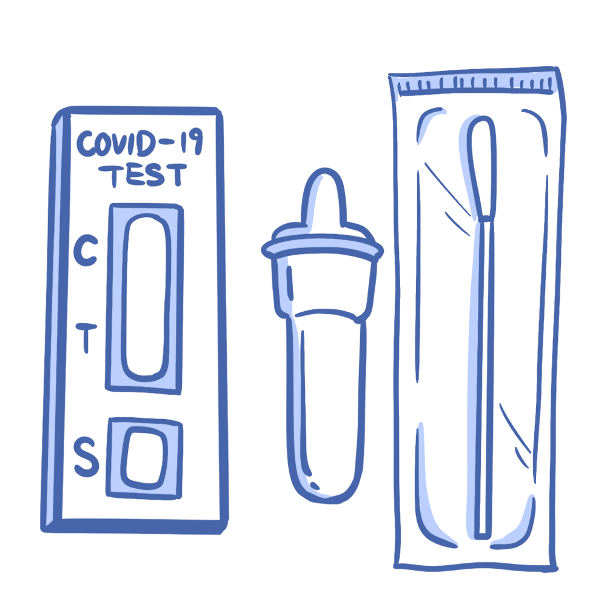
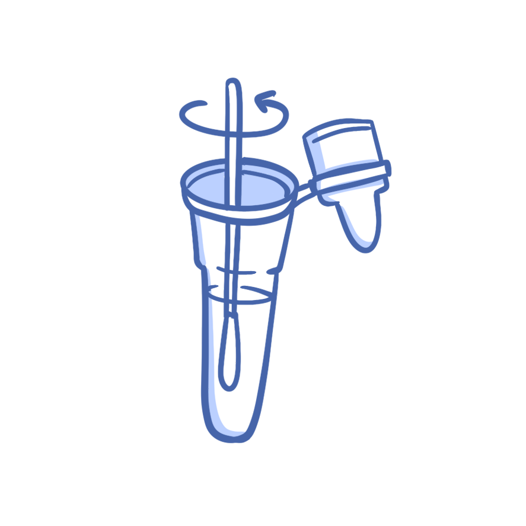
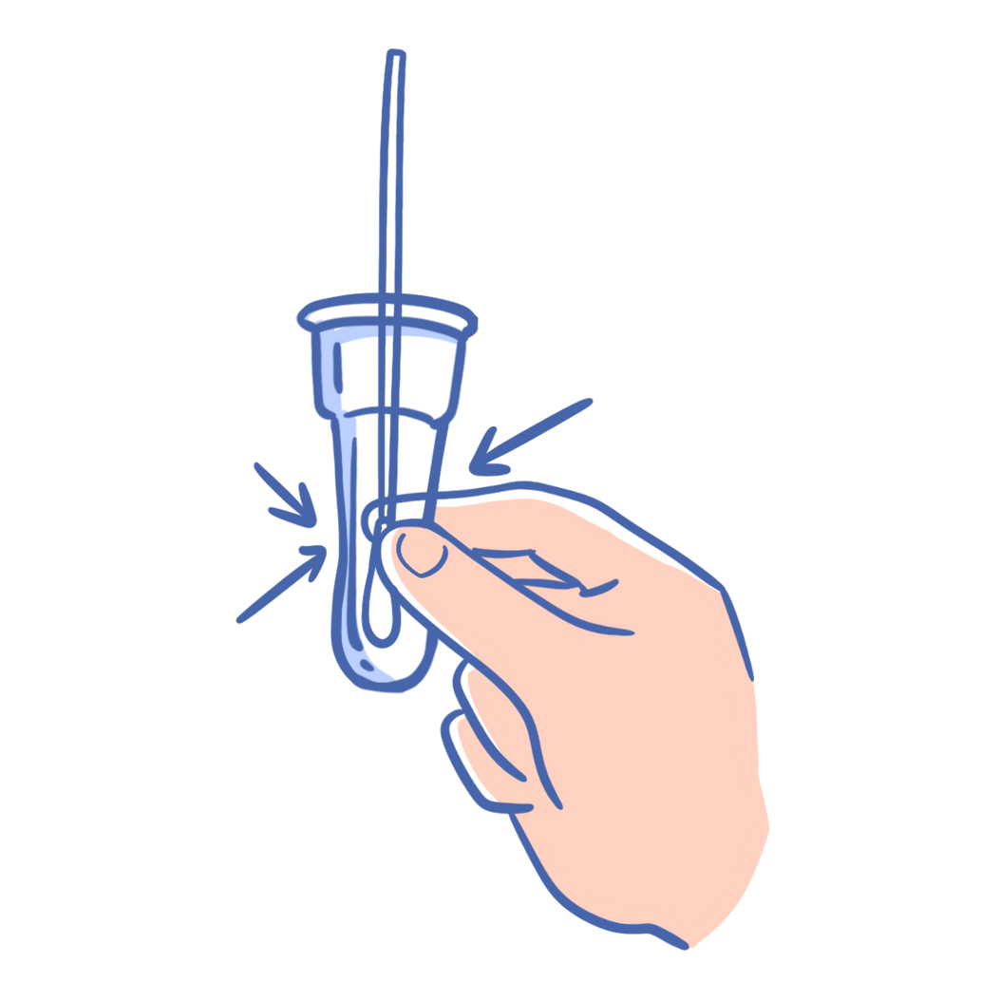
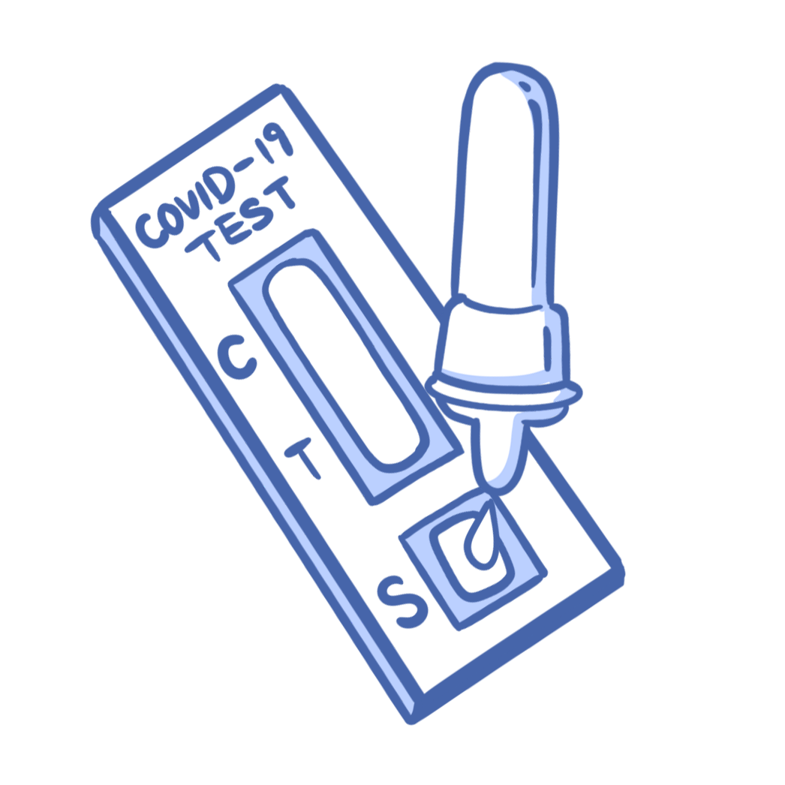
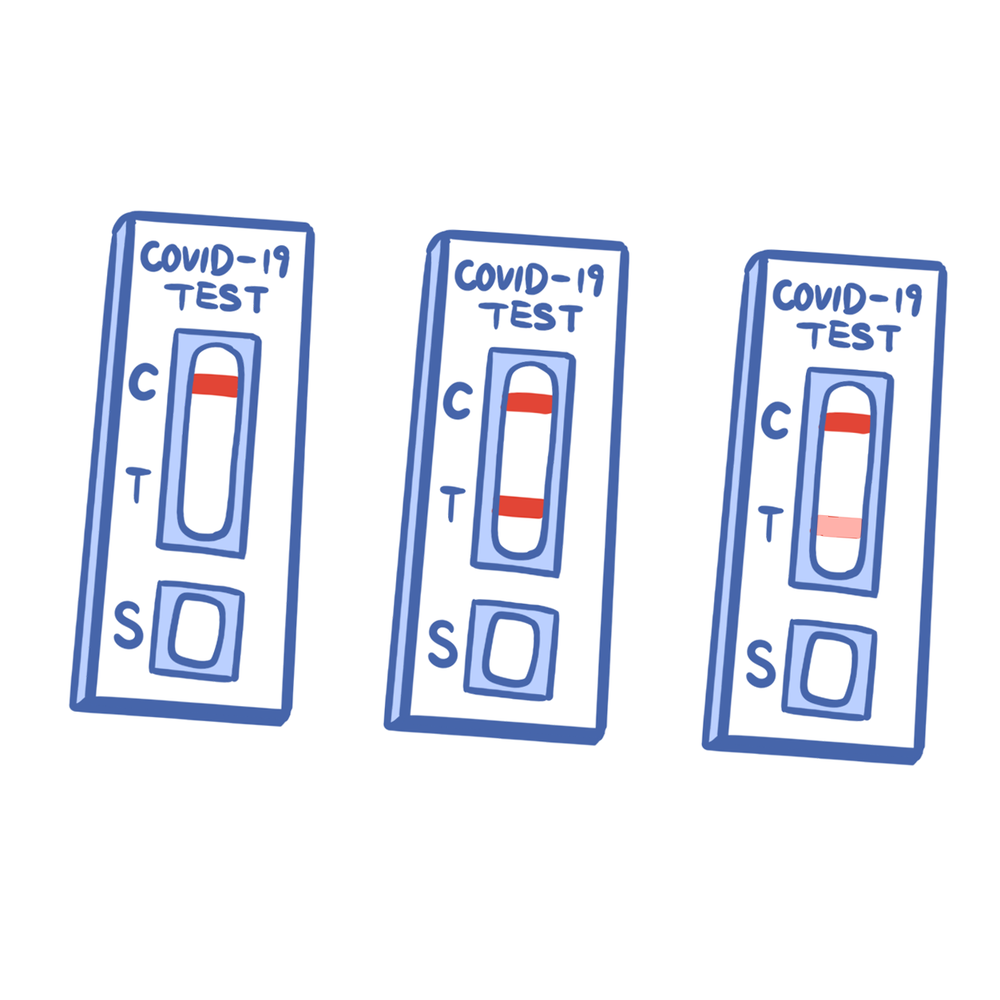

抗原自测前首先需要使用流动清水或手部消毒液清洁双手
视频版教学

随后打开拆开抗原检测试剂包装，检查抗原自测试剂是否在保质期内，并清点鼻拭子、采样管、检测卡、说明书等内容物
视频版教学
将头微微后仰，一手执鼻拭子尾部贴一侧鼻孔进入，延鼻道底部向后缓缓深入1-1.5cm，贴鼻腔旋转至少4-5圈，旋转时间不少于15秒。随后用同一拭子在另一鼻腔重复操作
视频版教学

将拭子头立即插入含有样本提取液的样本采集管中，捏住样本采集管底部，将拭子头在液体中旋转混匀至少30s
视频版教学

同时，用手隔着采集管外壁，挤压拭子头至少5次，确保样本充分洗脱于采集管中
视频版教学

采样管盖好滴头后，倒置采样管，轻轻挤压，将4滴液体垂直滴入检测卡s孔中
视频版教学

15分钟后读取检测结果，如图所示从左至右分别是阴性、阳性、阳性结果。如果c处未显示，无论t处是否显示，结果都无效
视频版教学